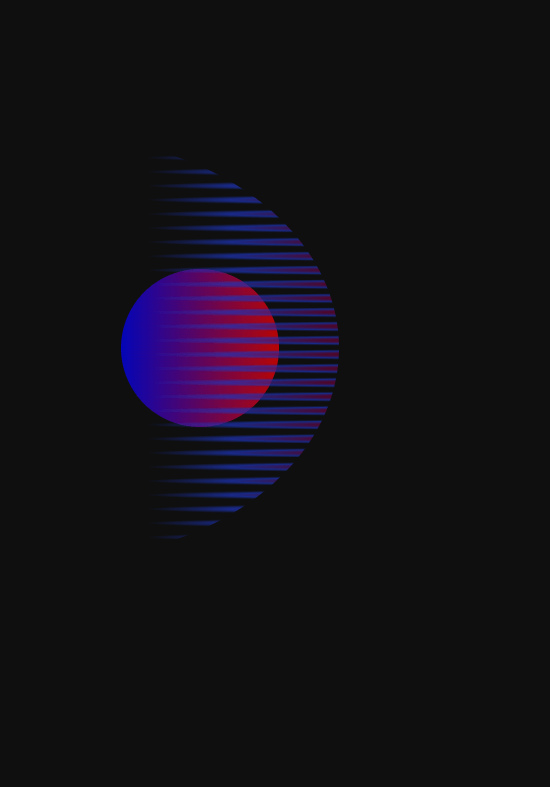
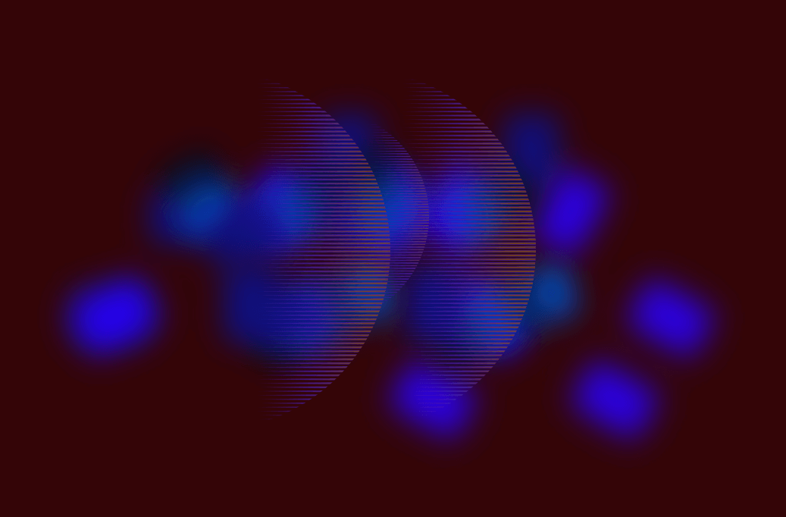
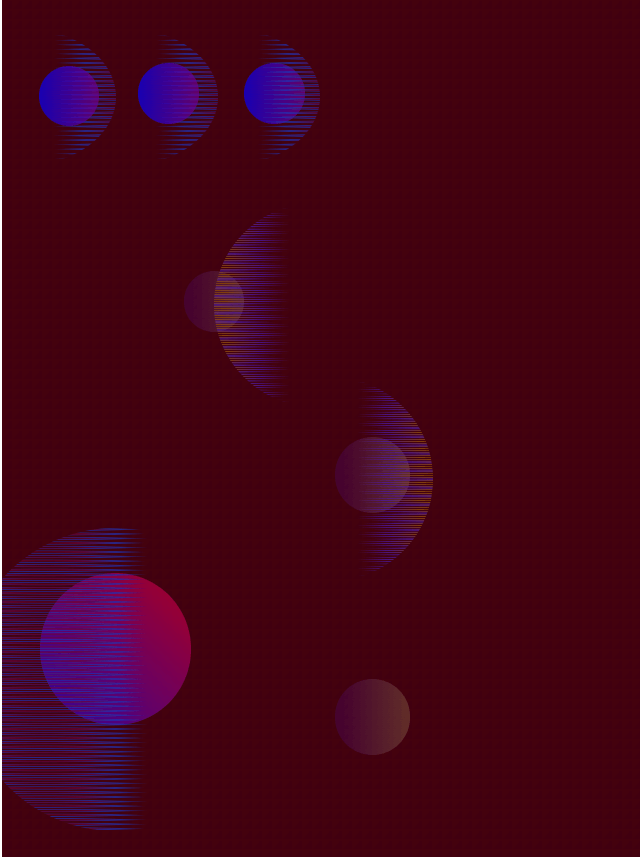
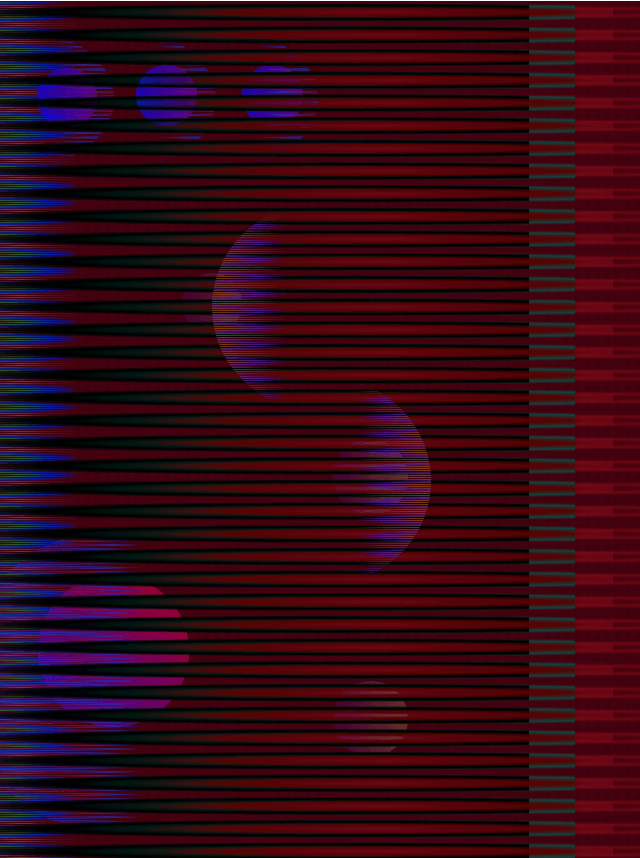
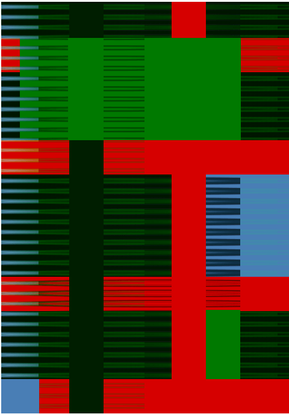

Tällä viikolla keskityin julisteen tekemiseen. Tämä projekti oli minulle jostain syystä haastava. Käytin monta päivää erilaisten elementtien testailuun (mikä oli toki tehtävän tarkoituskin), mutta turhauduin, kun en ollut tyytyväinen lopputuloksiin. Minusta tuntui jatkuvasti, etten ymmärtänyt koodaamista tarpeeksi hyvin tehdäkseni sillä kiinnostavia asioita. Lisäksi turhauduin siihen, miten hankalaa yksinkertaisten asioiden tekeminen koodilla oli – jos halusin esim. kopioida elementin, piti kopioida ja siirtää monta riviä koodia.
Kiinnostuin lopulta viivamaisesta gradientista ja sen kerrostamisesta. Kun lisäsin kerroksia ja siirsin niiden paikkaa – tuntui kuin olisin kutonut kangaspuilla mattoa. Kiinnostuin siitä, miten lopputulos alkoi näyttää “kudotulta”. Minun oli kuitenkin vaikea saada tähän kudottuun viivaan dynaamisuutta ja kerroksellisuutta. Meinasin jo aloittaa alusta. Lopulta päätin kuitenkin jatkaa ja lisätä paksumpia viivoja pystysuoraan, jotta julisteessa olisi vähän tilaa rauhoittua. Tällöin kiinnostuin kokeilemaan z-indeksiä enemmän, ja sitä miten pystyin lomittamaan elementtejä toistensa päälle kokeilemalla. Tämäkin tuntui käsityömäiseltä.
Alun välivaiheissa kysyin apua tekoälyltä useamman kerran - mutta turhauduin sen vastauksiin nopeasti – joko se poisti koodista jotain tai lopputulos ei ollut sitä mitä halusin. Tässä “lopullisessa” kudosmaisessa versiossa en lopulta käyttänyt tekoälyä ollenkaan. Kaikki elementit sijoittelin ja kopioin ja muokkasin itse. Lopullisessa versiossa on vähemmän elementtejä näkyvillä kuin matkan varrella koodissa oli, mutta päätin että tärkeämpää on luoda kiinnostava lopputulos kuin ympätä koodiin kaikki mitä teen.
Vähän jännittää, että onko juliste tarpeeksi “outo”, mutta ainakin minusta tuntuu, että julisteen tekemisen prosessi oli tehtävän annon mukainen ja kokeellinen – aloin työstää ilman suunnitelmia ja annoin kokeilujen johdatella minua. Minusta on myös kiinnostava pohtia, että “mitä koodilla voi tehdä” ja tarkastella vastauksena koodilla kutomista? Lopputulos ei ole minulle tavanomainen, joten se tuntuu erilaiselta kuin normi työni. Tuntuu, että alussa kipuilin sen kanssa, että olisin halunnut lisätä orgaanisia muotoja ja aaltoilevaa liikettä koodiin- mutta en keksinyt hyvää tapaa tehdä tätä. Lopulta nojauduin koodin erilaiseen vahvuuteen, mikä teki tekemisestä jouhevampaa.
Ylemmässä ympyrässä on filter hue-rotate, jonka avulla väriä pystyy muuttamaan.
Aloitin työstämään julistetta testailemalla erilaisia asioita.
Löysin kiinnostavan tavan luoda "viivoja" radientilla.
 Yritin yhdistella erilaisia elementtejä, mutta en pitänyt lopputuloksista. Oli vaikea "täyttää" koko juliste elementeillä.
Testaillessani huomasin, miten viiva gradientti näytti kiinnostavalta kerrostettuna. Kiinnostuin tästä ja aloin lisäilemaan läyereitä ja muokkaamaan radienttia
Lopputulos sunnuntaina illalla 5 päivän työstön jälkeen.